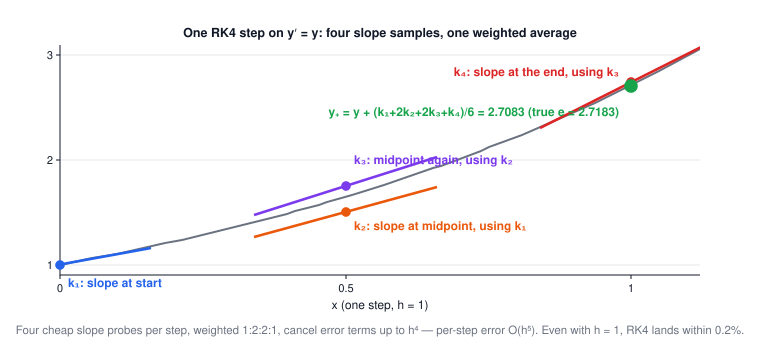
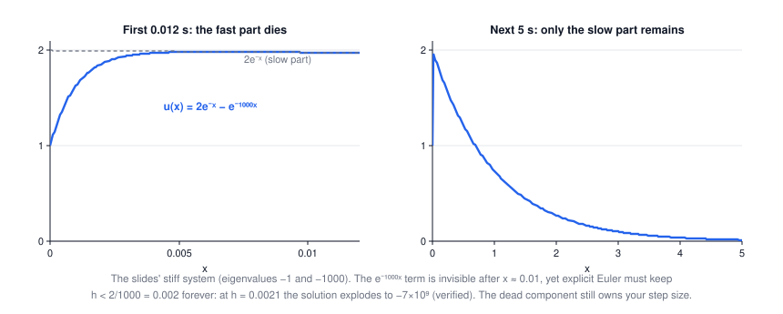

Lecture 7: Integration of Functions & ODEs
CSE 276C, Lecture 7 · Prof. Henrik Christensen · Numerical Recipes ch. 4 & 16. All numbers verified in
scripts/lec7/verify.py.- Why robots integrate
- Trapezoid, Simpson & friends
- Romberg: coarse-to-fine for free
- Improper integrals & substitutions
- Gauss integration & adaptivity
- ODEs: everything becomes first order
- Euler → RK2 → RK4
- Adaptive steps & PI control
- Bulirsch–Stoer
- Stiffness (the slides' "variable dynamics")
- PDEs in one slide
- Summary
The big picture
Lecture 3 interpolated between samples; this lecture sums those interpolants. Every quadrature rule below is literally "fit a Lecture-3 polynomial on each panel, integrate it exactly" — and every ODE method is "use the slope now to predict the state next".
chords (trapezoid) → parabolas (Simpson) → extrapolate h → 0 (Romberg / Bulirsch–Stoer) → adapt the step → respect stiffness
| robotics problem | what you have | what you need | method |
|---|---|---|---|
| odometry / dead reckoning | wheel or IMU rates | position over time | ODE integration (RK) |
| physics simulation | equations of motion | trajectories that don't gain energy | RK4 / adaptive RK |
| path length, swept volume, exposure | an integrand you can evaluate | one number | Simpson / Romberg / Gauss |
| motor + controller in one model | fast electrical + slow mechanical dynamics | stable simulation | stiff-aware (implicit) solvers |
1 · Why robots integrate
The slides frame \(I = \int_a^b f(x)\,dx\) as the ODE \(y' = f(x)\), \(y(a) = 0\), solve for \(y(b)\) — so quadrature and ODE solving are one subject. Applications: position estimation, path optimization, image restoration. The goal everywhere: a good estimate of y(b) with a reasonable number of evaluations.
2 · Trapezoid, Simpson & friends
Sample uniformly, \(x_i = x_0 + ih\), \(f_i = f(x_i)\), and integrate the interpolant (the Newton–Cotes family):
$$\text{trapezoid: } \int_{x_0}^{x_1} f \approx \frac{f_0 + f_1}{2}h + O(f''h^3) \qquad \text{Simpson: } \int_{x_0}^{x_2} f \approx \frac{h}{3}(f_0 + 4f_1 + f_2) + O(h^5 f^{(4)})$$| rule | fits a… | per-panel error | whole-interval order |
|---|---|---|---|
| trapezoid | chord (degree 1) | O(h³f″) | error ∝ 1/N² — doubling N buys ÷4 |
| midpoint | constant at the center | O(h³f″), half the trapezoid's constant | ∝ 1/N²; never evaluates the endpoints (handy for singular ends) |
| Simpson | parabola (degree 2) | O(h⁵f⁗) — exact through degree 3 | ∝ 1/N⁴ — doubling N buys ÷16 |
| Simpson ⅜ | cubic over 3 panels | \(\tfrac{h}{8}(3f_0+9f_1+9f_2+3f_3)\)… see fine print | same order as Simpson |
Chained over N panels, the extended trapezoid is \(h(\tfrac12 f_0 + f_1 + \dots + f_{N-1} + \tfrac12 f_N)\) with error \(O\!\big((x_N - x_0)^3 f'' / N^2\big)\).
🕹️ Try it: watch the shaded panels hug the curve, and the error divide by 4 (trapezoid) or 16 (Simpson) per doubling. The spike preset shows uniform panels failing.
Worked example: ∫₀^π sin x dx = 2, verified orders (click to open)
Trapezoid error at N = 16: 6.4×10⁻³; at N = 32: 1.6×10⁻³ → ratio 4.00 ✓ (order 2). Simpson: 1.66×10⁻⁵ → 1.03×10⁻⁶ → ratio 16.06 ✓ (order 4). Midpoint at N = 16: 3.2×10⁻³ — same order as trapezoid, about half the error, opposite sign.
3 · Romberg: coarse-to-fine, then extrapolate to h = 0
The slides' "strategy": refine coarse-to-fine and watch convergence. The payoff is the Euler–Maclaurin formula — the trapezoid's error is a clean series in even powers of h, with Bernoulli-number coefficients (\(B_0 = 1, B_2 = \tfrac16, B_4 = -\tfrac1{30}\), from \(t/(e^t-1) = \sum B_n t^n / n!\)). A series in h² can be extrapolated to h = 0: combine the N and 2N trapezoid answers to cancel the h² term, then those to cancel h⁴, and so on — reusing every evaluation already made.
Worked example: the Romberg table for ∫₀^π sin (click to open)
Errors down the first column (plain trapezoid, N = 2…32): 4.3×10⁻¹ → 1.6×10⁻³. Along the extrapolated diagonal: 4.3×10⁻¹ → 4.6×10⁻³ → 1.7×10⁻⁵ → 1.6×10⁻⁸ → 4×10⁻¹². Same 33 samples, eight more digits. ✓ verified.
4 · Improper integrals: fix them by substitution
The slides' taxonomy of "improper": a removable point value (\(\sin x / x\) at 0), an infinite limit, an endpoint singularity (\(x^{-1/2}\) at 0), an interior singularity (known or unknown location). If the value is infinite (\(\int_0^\infty x^{-1}\)), it's not improper — it's impossible.
The cure is a change of variable. For an infinite limit: \(\int_a^b f(x)\,dx = \int_{1/b}^{1/a} \tfrac{1}{t^2} f(1/t)\,dt\) (valid when a, b share a sign). In general \(\int f(x)dx = \int f(x(t))\,\frac{dx}{dt}dt\) — pick x(t) so the transformed integrand is tame. The slides' example, the Schwartz tanh rule:
$$x = \tfrac12(b+a) + \tfrac12(b-a)\tanh t, \qquad \frac{dx}{dt} = \tfrac12(b-a)\,\mathrm{sech}^2 t$$sech² dies double-exponentially fast, crushing endpoint singularities before they hurt. Verified: \(\int_0^1 x^{-1/2}dx = 2\); naive trapezoid hits 1/√0 = ∞ at the first endpoint, the tanh-transformed trapezoid quietly returns 1.995 with 201 points (and converges further with a wider t-window).
5 · Gauss integration & adaptivity
Drop uniform spacing: choose nodes and weights, \(\int_a^b W(x) f(x) dx \approx \sum_j W_j f(x_j)\). With n optimally placed nodes you integrate polynomials up to degree 2n−1 exactly — double the Newton–Cotes order for the same evaluations. (The nodes turn out to be roots of orthogonal polynomials — Chebyshev's cousins from Lecture 4.) The slides also note the mixture view: approximate f by Gaussians and integrate those in closed form.
6 · ODEs: everything becomes first order
Any higher-order ODE reduces to coupled first-order ones by naming the derivatives. The slides' mass under force F:
$$m\ddot u_1 = F(u_1) \;\xrightarrow{\;u_2 \,=\, \dot u_1\;}\; \frac{d}{dt}\begin{pmatrix}u_1\\u_2\end{pmatrix} = \begin{pmatrix}u_2\\ F(u_1)/m\end{pmatrix} \;=\; f(u, t)$$So every solver below only ever sees \(\dot y = f(y, t)\) — state in, slope out. (That state vector is exactly a robot's \((\theta, \dot\theta)\).) Three families: Runge–Kutta (the generic workhorse, great when f is cheap), Richardson/Bulirsch–Stoer (high precision), predictor-corrector (historically interesting, rarely used today).
7 · Euler → RK2 → RK4
Forward Euler trusts the slope at the start of the step for the whole step:
$$y_{n+1} = y_n + h f(x_n, y_n) \qquad \text{(asymmetric: error } O(h^2) \text{ per step)}$$RK2 fixes the asymmetry by probing the midpoint first; RK4 probes four times and takes a weighted average:
$$\begin{aligned} k_1 &= hf(x_n, y_n) & k_2 &= hf(x_n + \tfrac h2, y_n + \tfrac{k_1}2)\\ k_3 &= hf(x_n + \tfrac h2, y_n + \tfrac{k_2}2) & k_4 &= hf(x_n + h, y_n + k_3) \end{aligned} \qquad y_{n+1} = y_n + \tfrac{k_1}6 + \tfrac{k_2}3 + \tfrac{k_3}3 + \tfrac{k_4}6 + O(h^5)$$
Worked example: measured orders on y′ = y (click to open)
Error at x = 1 (true value e), halving h from 0.05 to 0.025: Euler 6.5×10⁻² → 3.3×10⁻² (÷1.96 ≈ 2¹), RK2 1.1×10⁻³ → 2.8×10⁻⁴ (÷3.93 ≈ 2²), RK4 1.4×10⁻⁷ → 8.7×10⁻⁹ (÷15.7 ≈ 2⁴). Orders 1, 2, 4 ✓.
🕹️ Try it: same pendulum, same step — Euler spirals outward (energy leak), RK4's orbit closes. Crank h up and watch Euler fling the pendulum over the top.
8 · Adaptive step size & PI control
The obvious error estimate (slides): take a full step, take two half steps, compare; recurse if needed. Nobody goes beyond 5th-order RK — better to spend effort on step-size control than on order. And since step control is a feedback loop, the slides close it with an actual PI controller:
$$h_{n+1} = S\,h_n\,\mathrm{err}_n^{\alpha}\,\mathrm{err}_{n-1}^{\beta}, \qquad \alpha = \tfrac1k - 0.75\beta, \quad \beta = \tfrac{0.4}{k}$$S a safety factor, k the integrator's order. The proportional part reacts to the current error, the integral part smooths against oscillating step sizes — control theory applied to the solver itself.
9 · Bulirsch–Stoer: midpoints + Richardson extrapolation
Take one big step H, crossed by n modified-midpoint substeps (h = H/n, centered differences, so the error is a series in even powers of h — same trick as Romberg):
$$z_0 = y(x_n), \quad z_1 = z_0 + hf, \quad z_{m+1} = z_{m-1} + 2hf(x_n + mh, z_m), \quad y(x_n + H) = \tfrac12\big[z_n + z_{n-1} + hf(x+H, z_n)\big]$$Then combine runs with different n and extrapolate to h → 0. The first rung:
$$y(x+H) = \frac{4y_n - y_{n/2}}{3} \quad\text{— 4th order, like RK4, with ~⅔ fewer evaluations}$$Deeper rungs use the Romberg-style tableau (each new n adds a row; \(T_{kk} - T_{k,k-1}\) is a free error estimate, driving step-size selection). Step sequences: n = 2, 4, 6, 8, 12, 16, 24, 32… or the newer nj = 2(j+1).
Worked example: the first extrapolation really is 4th order (click to open)
y′ = y over H = 1: modified midpoint with n = 4 errs by 2.7×10⁻², n = 8 by 7.0×10⁻³ (÷3.9 — the h² series at work). Richardson: (4y₈ − y₄)/3 errs by 3.6×10⁻⁴, a 20× bonus with zero new evaluations. ✓
10 · Stiffness: the dead mode that owns your step size
The slides' "variable dynamics" example:
$$u' = 998u + 1998v, \qquad v' = -999u - 1999v, \qquad u(0)=1,\; v(0)=0$$ $$\Rightarrow\; u = 2e^{-x} - e^{-1000x}, \qquad v = -e^{-x} + e^{-1000x}$$Two time scales: eigenvalues −1 and −1000 (verified). The fast term is numerically zero after x ≈ 0.01 — but explicit Euler's stability requires \(|1 + h\lambda| \le 1\) for every eigenvalue, so h ≤ 2/1000 = 0.002 forever.

🕹️ Try it: slide h across 0.002 and watch a perfectly smooth solution detonate. The cliff is exactly where |1 − 1000h| crosses 1.
11 · PDEs in one slide
When the unknown is a field u(x, t), the three canonical families (whole courses exist: MATH 110/231):
| type | equation | prototype | problem flavor |
|---|---|---|---|
| hyperbolic | \(u_{tt} = v^2 u_{xx}\) | wave | initial-value: march forward in time |
| parabolic | \(u_t = \partial_x(D\,u_x)\) | diffusion | initial-value, smoothing |
| elliptic | \(u_{xx} + u_{yy} = \rho(x,y)\) | Poisson | boundary-value: solve everywhere at once |
Finite differences on a grid turn all three into (sparse) linear algebra — initial-value problems march like ODEs; boundary-value problems become one big Lecture-2 solve. Robotics sightings: potential-field planners solve Poisson-like problems; mapping/diffusion models are parabolic.
12 · Summary
- Quadrature = integrate the interpolant: chords give order 2, parabolas order 4, and symmetric rules get a free extra degree.
- Smooth error series ⇒ extrapolate to h = 0: Romberg (integrals) and Bulirsch–Stoer (ODEs) get many digits from few evaluations.
- Improper ≠ impossible — substitute until the integrand is tame (x → 1/t, tanh rule).
- Any ODE → first-order system. RK4 is the default; adaptive step control (even PI-controlled) is where the real efficiency lives.
- Stiffness: stability, not accuracy, limits h — a decayed fast mode still constrains every explicit step. Go implicit.
| method | one-line idea | order | use it when |
|---|---|---|---|
| trapezoid / midpoint | chord / center value per panel | 2 | quick, or building block for Romberg |
| Simpson | parabola per panel pair | 4 | smooth integrands, cheap accuracy |
| Romberg | trapezoid + h²-series extrapolation | rising | smooth f, many digits |
| Gauss | optimal nodes and weights | 2n−1 exact | f expensive, smooth, fixed budget |
| Euler | one slope, trust it | 1 | never for production — the baseline |
| RK4 | four slopes, 1:2:2:1 | 4 | the generic ODE workhorse |
| adaptive RK | step doubling / PI step control | 4–5 | dynamics vary along the way |
| Bulirsch–Stoer | midpoint runs + extrapolation | very high | smooth f, high precision |
| implicit (BE, etc.) | solve for the end-of-step state | 1+ | stiff systems |
⚠️ Typos in the slides to watch out for
- Slide 6 title "Basic use of Simpson's rule" — the first formula shown is the trapezoid rule (Newton–Cotes degree 1); Simpson follows after.
- Slide 8: extended-trapezoid error written O((x_N−x_0)f″/N²) — should be O((x_N−x_0)³ f″/N²) (equivalently (b−a)h²f″/12).
- Slide 11: h = (a−b)/N → (b−a)/N; and the title says Simpson but Euler–Maclaurin is the trapezoid's error series.
- Slide 21: "motion of a mass when actuated by a mass" → by a force.
- Slide 31: y(n_n + H) → y(x_n + H); in the recursion z_{m+1} = z_{m−1} + 2hf(x_n + mh, z_m) (slide has z_n).
- Slide 32: the newer step sequence should read n = 2, 4, 6, 8, 10, 12, … (n_j = 2(j+1)); the slide's list "2, 3, 6, 8…" is garbled.
- Slide 33: the extrapolation recursion as printed ((2T_{k,j} − T_{k−1,j})/(ratio²−1)) doesn't reproduce (4y_n − y_{n/2})/3; the standard form is T_{k,j+1} = T_{k,j} + (T_{k,j} − T_{k−1,j})/((n_k/n_{k−j})² − 1).
- Spelling: "Runga-Kutta", "Burlirsch"/"Buerlirsch-Stoer" → Runge-Kutta, Bulirsch–Stoer.